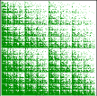
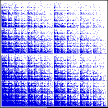
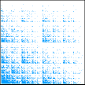
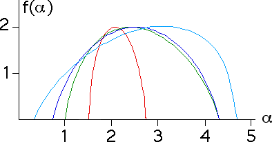

| The figures below are results of applying the random IFS alogrithm with the transformations |
| T3(x, y) = (x/2, y/2) + (0, 1/2) |
T4(x, y) = (x/2, y/2) + (1/2, 1/2) |
| T1(x, y) = (x/2, y/2) |
T2(x, y) = (x/2, y/2) + (1/2, 0) |
|
| with probabilities (p1, p2, p3, p4) |
| (0.35,0.30,0.20,0.15) |
(0.50,0.25,0.20,0.05) |
(0.60,0.20,0.15,0.05) |
(0.80,0.10,0.06,0.04) |
|
 |
 |
 |
|
| Here are the corresponding f(α) curves. |
| |
|  |
| |
| Note that because each of the log(pi)/log(ri) are distinct in all four examples,
we have seen f(alphamin) = f(alphamax) = 0. |
| Note that the more uniform the probabilities (the red
curve), the narrower
the domain of the f(α) curve. |
| If probabilities are equal, the f(α) curve
collapses to a vertical line segment. |
| Recalling the max and min values of α are given by the max and min values of
log(pi)/log(ri), we see |
| log(.35)/log(.5) ≈ 1.51, log(.15)/log(.5) ≈ 2.74 |
| log(.50)/log(.5) = 1.00, log(.05)/log(.5) ≈ 4.32 |
| log(.60)/log(.5) ≈ 0.74, log(.05)/log(.5) ≈ 4.32 |
| log(.80)/log(.5) ≈ 0.32, log(.04)/log(.5) ≈ 4.64 |
|